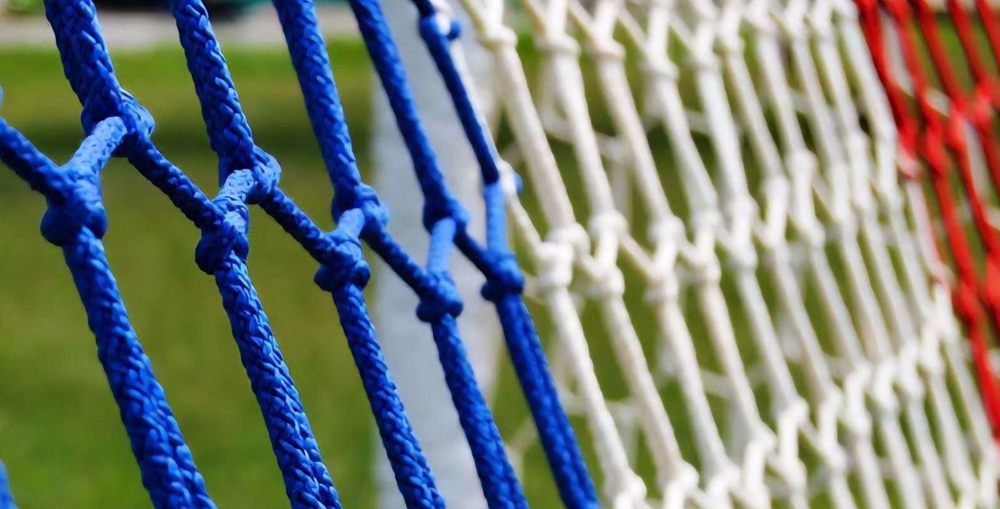
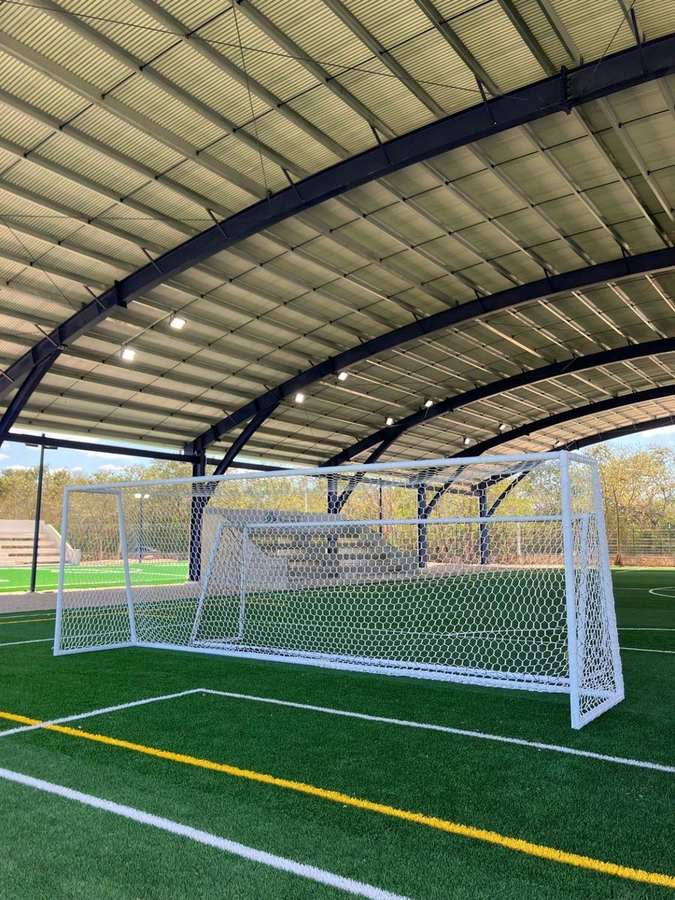
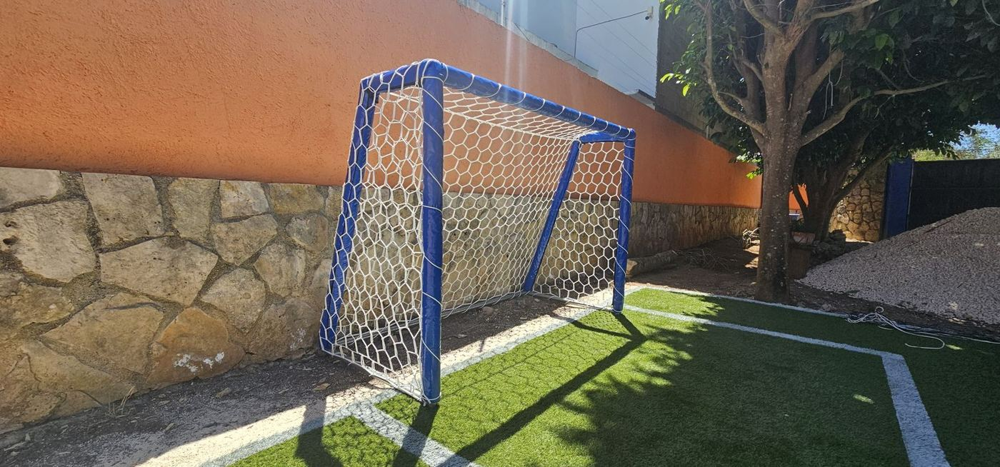
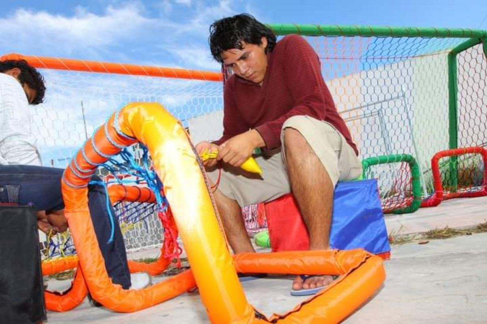

Si tu red ya se rompió o se quemó con el sol, te tejemos una nueva a la medida exacta, en hexágono tipo colmena.
Te respondemos el mismo día hábil.






En la Universidad Modelo reemplazamos la malla ciclónica oxidada de sus porterías por redes hexagonales, más seguras y con mejor vista.
Ancho (travesaño), alto (poste) y fondo arriba y abajo. Una foto nos ayuda mucho.
Te mandamos precio y tiempo de entrega por escrito.
Tejemos tu red a mano y te la enviamos a cualquier parte de México.
Cordón de poliéster 100 % de alta tenacidad, trenzado de 60 filamentos (4 mm). Resiste la tracción, el roce, el sol y la lluvia.
Ancho del travesaño, alto del poste y el fondo de la portería arriba y abajo. Con eso la tejemos a la medida exacta.
Blanca; otros colores según disponibilidad.
Sí, también en rombo de nylon alquitranado negro de 1" o 4", la misma de nuestras redes perimetrales.
Sí, a todo México. Te confirmamos el tiempo de entrega al cotizar, porque cada red se teje a mano.